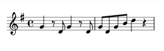

This is my testing site for some online projects I'm working on. The
site is based on OS.JS, an open-source JavaScript Web Desktop.

The Chamber Guitar consists of trios for flute, violin, and guitar.
My goal is to put together enough music for a 3-hour trio gig and
make it available as a free download. Vol. 1 comprises the first
'set' - about 45 minutes of music - and contains works by Boismortier,
Loeillet, Handel, and Mozart.
The scores were engraved with Lilypond, the award-winning open-source music engraving software. Lilypond
is more like a programming language than a desktop music program; you write text files containing the likes
of this:
g4 r8 d g4 r8 d |
g d g b d4 r |
and the Lilypond 'compiler' turns this source code into a finished music score:

You can reproduce the Chamber Guitar scores and make changes and modifications to them under the terms of the Creative
Commons Public License (Attribution-ShareAlike 4.0); the source code for the scores is available on the
GitHub
ChamberGuitarists repo.